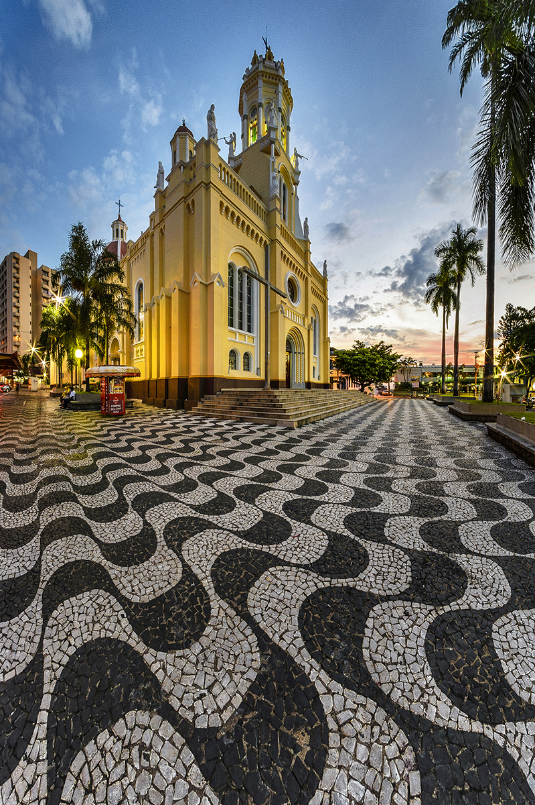

No centro de Espírito Santo do Pinhal, existem muitas casas com diversas temáticas diferentes, sendo elas com a arquitetura do século XIX e XX (19 e 20), alguns foram reformados mas sempre mantendo as cores e arquiteturas originais, devido serem patrimônios históricos da cidade. Marcos culturais como o prédio do cinema "Cine A" onde residia o "Barão de Motta Paes" ou até mesmo o prédio do Teatro Avenida.
Praça da Independência
Além de ser a atração central da cidade, a Praça
da Independência é também um marco na história
de Espírito Santo do Pinhal. A praça é rodeada de
casarões e outras construções antigas erguidas
durante a 1° República. Recém reformada ficou
bem iluminada, com bancos confortáveis por toda
extensão, uma linda fonte e a magnífica Igreja
Matriz do Divino Espírito Santo e Nossa Senhora
das Dores.
imagens da igreja Matriz



Outros prédios historicos ao redor da praça:
Galeria Casarão:
O prédio conhecido como “Galeria Casarão” foi a sede da 1° Câmara Municipal, sendo anteriormente propriedade do Barão de Motta Paes. Sofreu algumas interferências em seu interior e hoje abriga o cinema “Cine Art Café” e a Associação Cultural Antônio Beneficto Machado Florence.
Rua José Bonifácio:
A Rua José Bonifácio (Rua Direita) sempre foi
destinada ao comércio local. A maioria das
construções que resistem até hoje, datadas do
final do século XIX e início do século XX,
apresentam uma característica arquitetônica
peculiar. O piso térreo funcionava como comércio
e a parte superior como residência.
Existem Muitos outros edificios históricos no centro da cidade, como: a casa de
Romualdo De Souza Brito (fundador da cidade), o Theatro Avenida, Palácio do café, residência
da familia Vergueiro I e II, a Câmara Municipal, entre muitos outros!
Câmara Municipal:
No entorno da Praça Rio Branco podemos
encontrar inúmeras construções cujas fachadas
estão preservadas por processo de tombamento
do CONDEPHAAT – Conselho de Defesa do
Patrimônio Histórico, Arqueológico, Artístico, e
Turístico do Estado de São Paulo, como o prédio
da Câmara Municipal que ocupa importante
espaço no núcleo histórico da cidade e possui sua
frente voltada para os fundos da Praça Rio Branco
/ Palácio do Café.